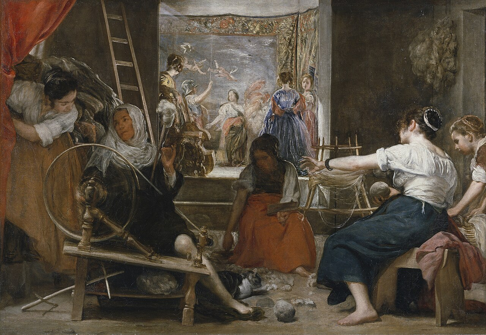

Reading MRC and SRv6: resilient AI supercomputer networking

A review of an external paper. The work is not mine. This post is a reader’s notes, in the spirit of an admiring colleague.
Paper: Resilient AI Supercomputer Networking using MRC and SRv6. Araujo et al. Authors come from OpenAI, Microsoft, AMD, Broadcom, and NVIDIA. arXiv preprint 2605.04333, May 2026.
Read the original: arXiv:2605.04333. It is arXiv preprint 2605.04333v1 in cs.NI, dated 5 May 2026.
What the paper does
Large AI training jobs are synchronous. Every GPU waits for the slowest transfer in a step. So one bad link can stall the whole job. At 100,000 GPUs, network failures stop being rare. They become a daily event.
The paper offers a three-part answer.
First, a new transport called MRC, short for Multipath RC. It extends RoCEv2. It sprays each queue pair across many paths instead of pinning it to one. It balances load with ECN signals. It recovers losses with selective ACK and packet trimming. It turns off PFC and runs the fabric in best-effort lossy mode.
Second, a multi-plane Clos topology. Take an 800 Gb/s NIC and split it into 8 lanes of 100 Gb/s. Build 8 parallel planes from the same switches. Now a 100,000 GPU cluster needs only two switch tiers, not three. This lowers latency, lowers cost and power, and shrinks the blast radius of any one link.
Third, static source routing with SRv6. The endpoint writes the full path into each packet using uN micro-segments. Dynamic routing in the switches is turned off completely. So the endpoint owns failure handling, not the switch.
This runs in production at OpenAI and Microsoft. It has trained frontier models including ChatGPT and Codex. It is implemented on NVIDIA CX-8, AMD Pollara and Vulcano, and Broadcom Thor Ultra NICs. The spec is released openly through OCP.
What works well
The design choices are bold and well argued. Turning off dynamic routing sounds backwards at first. Turning off PFC sounds risky too. But the reasoning is clean. Two adaptive systems fighting each other add no value. MRC already routes around failures on its own. So let it do that job alone.
The blast-radius argument is concrete and convincing. Losing one T0-to-T1 link in an 800 Gb/s single plane cuts a node’s capacity by about 3 percent. The same loss in a 100 Gb/s plane costs only about 0.4 percent. So the job barely notices a link flap. The team even leaves flapping links in service and repairs them later.
The observability insight is elegant. With static source routing, a probe takes the exact same path a data packet would take. So a Clustermapper probe gives ground truth on the forwarding plane. Switch telemetry cannot match this. This is why they can run a relaxed repair posture and still feel safe.
The multi-vendor breadth is a real systems achievement. The same protocol works across three NIC vendors and several switch platforms. That is strong evidence the design generalizes.
The honesty is refreshing. The team flags the single points of failure that remain. They flag the cases where their load-balancing rule does not behave well.
A few friendly suggestions
The MRC versus RoCE comparison is uneven, and that is the thing I would fix first. MRC’s headline results come from 42,000 to 75,000 GPU jobs. The head-to-head against RoCE runs on tiny testbeds of 16 and 64 GPUs, called Cluster C and Cluster D. The authors say plainly they have no large deployment for a direct comparison.
That gap matters for two reasons. The RoCE baseline is configured by the authors, as a single plane with DCQCN. The authors also call DCQCN very hard to tune. So a skeptic could read the comparison as a gentle strawman. Even a partial at-scale A or B test would make the case airtight.
There is no at-scale before-and-after. The paper shows MRC works well at scale. It shows RoCE struggles on small testbeds. It never shows the old approach at the same scale. So the size of the win is asserted, not measured. The strongest possible number would be the job-interruption rate before MRC and after MRC at a fixed scale.
Clustermapper’s own cost deserves a paragraph. Every node runs an agent. Every agent probes every directly connected link every millisecond. That is powerful. But the total probe traffic and control overhead at 100,000 nodes is not characterized. There is also a small tension to resolve. The paper says MRC makes denylists unnecessary. Yet it keeps Clustermapper for observability and some policy calls. One sentence reconciling the two would help.
Several key figures are single incidents. Figure 6 is one transceiver glitch that cost about 25 percent throughput. Figure 8 is one T1 reboot. These traces are vivid and useful. But a distribution across many failures would tell readers the typical case, not just the illustrative one. For example, a histogram of throughput dips and recovery times across all flaps in a job.
The remaining single point of failure is flagged, and it should be quantified. An 800 Gb/s NIC optic splits into 4 lanes of 200 Gb/s. If the NIC transceiver itself flaps, all ports go down at once. Then the queue pairs fail and the job cannot ride it out. The authors say this is rare and that a different optical design might avoid it. How often does it happen at scale, and what does it cost the job. That number would tell readers how close to fully resilient the system really is.
Generalizability is narrow by design. MRC needs SRv6 uN micro-segment support in the switches. It needs packet trimming in the switches. It needs specific NICs. It needs a multi-plane topology. So it suits a 100,000 GPU frontier cluster, where you can co-design the whole stack. A short note on what a smaller operator could adopt step by step would widen the paper’s reach.
The relation to UET could be sharper. MRC is described as a minimal extension to RoCE that borrows from Ultra Ethernet Transport. So a crisp line on what is new in MRC beyond UET would help. The novelty seems to be the SRv6 static-routing plus multi-plane co-design plus the production experience itself. Saying so directly would place the contribution well.
Bottom line
This is a bold, important, and candid paper. The static-routing-for-observability argument is a standout. The multi-vendor production deployment is rare and valuable. Turning off both dynamic routing and PFC is exactly the kind of principled risk-taking the field needs.
The main opportunity is evidence symmetry. MRC’s at-scale wins are weighed against small-testbed RoCE. They are also weighed against an unquantified before. So the size of the benefit is the one thing a reader has to take partly on faith. Close that gap and a very persuasive paper becomes an unarguable one.